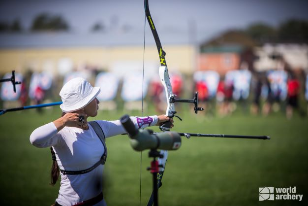

A First-round loss for Mexico`s Karla Hinojosa, who qualified 30th on the ranking round, came at the hand of Kyrgyzstan`s Asel Shaerbekova. She shot in Copenhagen and Antalya in 2015 but, prior to that, hadn`t been seen internationally since the qualifier ahead of London 2012. Asel`s first round match in Shanghai, and upset of Hinojosa, was also her first win on the world senior international stage. Nice!
We found photos for you from the archives of her rival as well as Asel Sharbekova
Asel Sharbekova archer